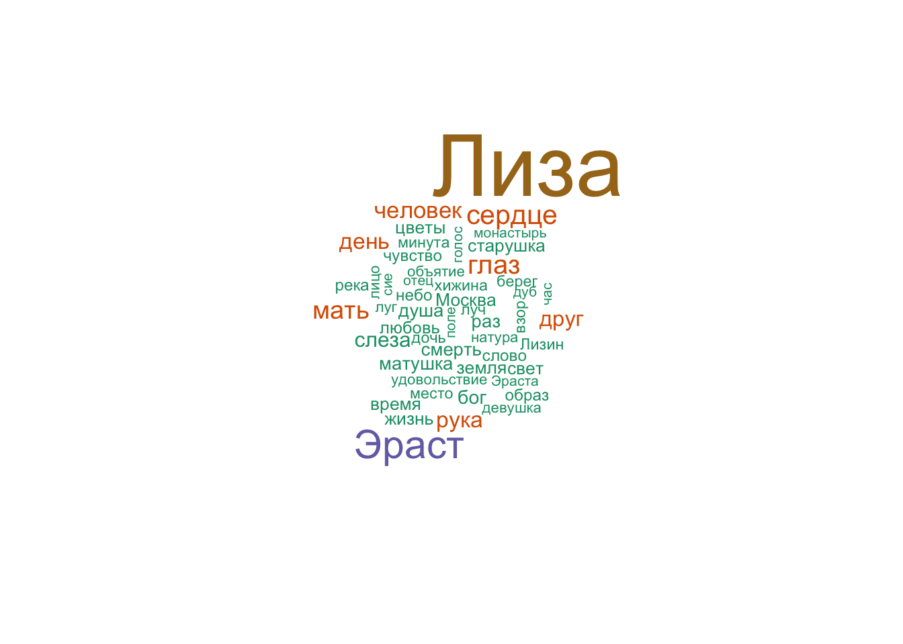
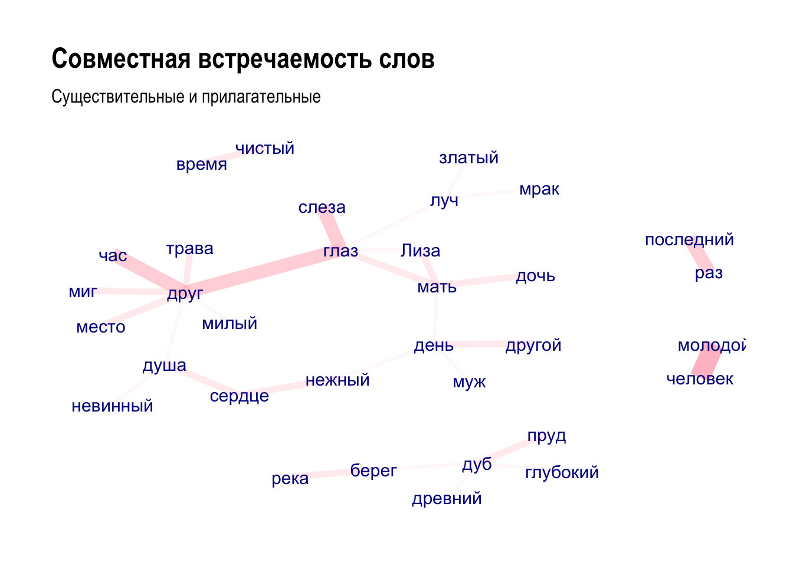
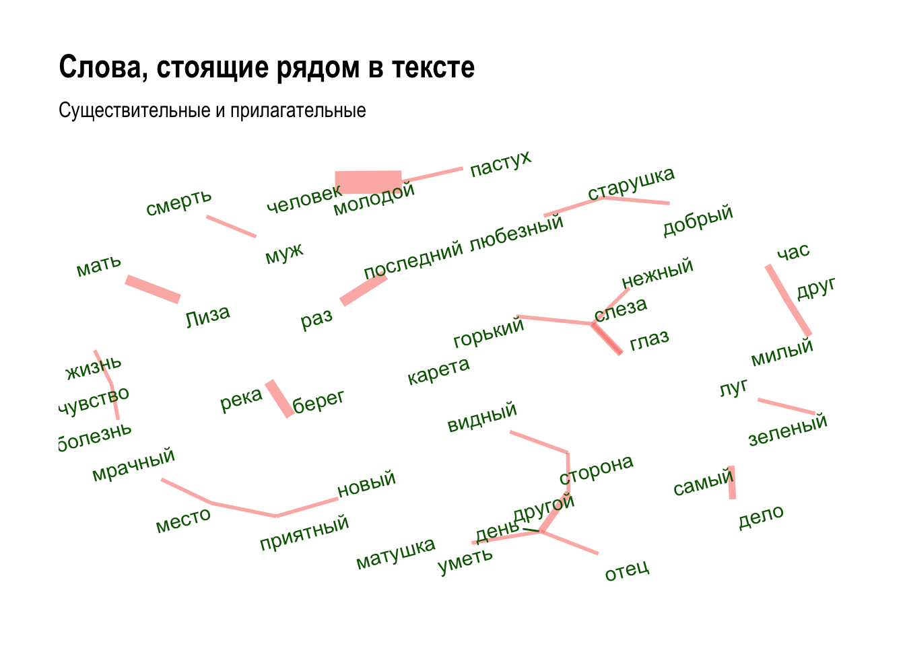

Тема 10 Токенизация и лемматизация
Токенизация — процесс разделения текста на составляющие (их называют «токенами»). Токенами могут быть слова, символьные или словесные энграмы (n-grams), то есть сочетания символов или слов, даже предложения или параграфы. Все зависит от того, какие единицы вам нужны для анализа.
Визуально процесс токенизации можно представить так36:

Токенизировать можно в базовом R, и Jockers (2014) прекрасно показывает, как это можно делать. Но вы воспользуемся двумя пакетами, которые предназначены специально для работы с текстовыми данными и разделяют идеологию tidyverse. Оба пакета придется загрузить отдельно.
Для их освоения рекомендую изучить две книги: Silge and Robinson (2017) и @ Обе доступны бесплатно онлайн. Обе содержат множество примеров для английских текстов. Для разнообразия я покажу, как это работает, на русских текстах (потому что латинские и древнегреческие никому не интересны).
Для анализа я снова (ср. урок 6) загружу “Бедную Лизу” Карамзина, на этот раз полностью.
## [1] "character"## [1] 46## [1] 1045 505 1524 218 285 999 254 658 1149 629 121 284 170 252 701
## [16] 1091 632 936 1726 96 698 167 985 316 1323 1844 763 1104 617 959
## [31] 1191 305 1433 119 830 414 257 1218 977 225 513 1695 132 214 251
## [46] 267## [1] " Может быть, никто из живущих в Москве не знает так хорошо окрестностей города сего, как я, потому что никто чаще моего не бывает в поле, никто более моего не бродит пешком, без плана, без цели -- куда глаза глядят -- по лугам и рощам, по холмам и равнинам. Всякое лето нахожу новые приятные места или в старых новые красоты. Но всего приятнее для меня то место, на котором возвышаются мрачные, готические башни Си...нова монастыря. Стоя на сей горе, видишь на правой стороне почти всю Москву, сию ужасную громаду домов и церквей, которая представляется глазам в образе величественного амфитеатра: великолепная картина, особливо когда светит на нее солнце, когда вечерние лучи его пылают на бесчисленных златых куполах, на бесчисленных крестах, к небу возносящихся! Внизу расстилаются тучные, густо-зеленые цветущие луга, а за ними, по желтым пескам, течет светлая река, волнуемая легкими веслами рыбачьих лодок или шумящая под рулем грузных стругов, которые плывут от плодоноснейших стран Российской империи и наделяют алчную Москву хлебом. "10.1 Токенизация в tidytext
Прежде чем передать текст пакету tidytext, его следует трансформировать в тиббл – этого требуют функции на входе. По умолчанию столбец будет называться value, и я его сразу переименую.
## # A tibble: 46 × 1
## text
## <chr>
## 1 " Может быть, никто из живущих в Москве не знает так хорошо окрестностей …
## 2 " На другой стороне реки видна дубовая роща, подле которой пасутся мно…
## 3 " Часто прихожу на сие место и почти всегда встречаю там весну; туда ж…
## 4 " Но всего чаще привлекает меня к стенам Си...нова монастыря воспомина…
## 5 " Саженях в семидесяти от монастырской стены, подле березовой рощицы, …
## 6 " Отец Лизин был довольно зажиточный поселянин, потому что он любил ра…
## 7 " \"Бог дал мне руки, чтобы работать, -- говорила Лиза, -- ты кормила …
## 8 " Но часто нежная Лиза не могла удержать собственных слез своих -- ах!…
## 9 " Прошло два года после смерти отца Лизина. Луга покрылись цветами, и …
## 10 " Лиза, пришедши домой, рассказала матери, что с нею случилось. \"Ты х…
## # ℹ 36 more rowsЭтот текст мы передаем функции unnest_tokens(), которая принимает следующие аргументы:
unnest_tokens(
tbl,
output,
input,
token = "words",
format = c("text", "man", "latex", "html", "xml"),
to_lower = TRUE,
drop = TRUE,
collapse = NULL,
...
)Аргумент token принимает следующие значения:
- “words” (default),
- “characters”,
- “character_shingles”,
- “ngrams”,
- “skip_ngrams”,
- “sentences”,
- “lines”,
- “paragraphs”,
- “regex”,
- “ptb” (Penn Treebank).
Используя уже знакомую функцию map, можно запустить unnest_tokens() с разными аргументами:
params <- tribble(
~tbl, ~output, ~input, ~token,
liza_tbl[1,], "word", "text", "words",
liza_tbl[1,], "sentence", "text", "sentences",
liza_tbl[1,], "char", "text", "characters",
)
params %>% pmap(unnest_tokens) %>% head()## [[1]]
## # A tibble: 159 × 1
## word
## <chr>
## 1 может
## 2 быть
## 3 никто
## 4 из
## 5 живущих
## 6 в
## 7 москве
## 8 не
## 9 знает
## 10 так
## # ℹ 149 more rows
##
## [[2]]
## # A tibble: 5 × 1
## sentence
## <chr>
## 1 может быть, никто из живущих в москве не знает так хорошо окрестностей города…
## 2 всякое лето нахожу новые приятные места или в старых новые красоты.
## 3 но всего приятнее для меня то место, на котором возвышаются мрачные, готическ…
## 4 стоя на сей горе, видишь на правой стороне почти всю москву, сию ужасную гром…
## 5 внизу расстилаются тучные, густо-зеленые цветущие луга, а за ними, по желтым …
##
## [[3]]
## # A tibble: 846 × 1
## char
## <chr>
## 1 м
## 2 о
## 3 ж
## 4 е
## 5 т
## 6 б
## 7 ы
## 8 т
## 9 ь
## 10 н
## # ℹ 836 more rowsСледующие значения аргумента token требуют также аргумента n:
params <- tribble(
~tbl, ~output, ~input, ~token, ~n,
liza_tbl[1,], "ngram", "text", "ngrams", 3,
liza_tbl[1,], "shingles", "text", "character_shingles", 3
)
params %>% pmap(unnest_tokens) %>% head()## [[1]]
## # A tibble: 157 × 1
## ngram
## <chr>
## 1 может быть никто
## 2 быть никто из
## 3 никто из живущих
## 4 из живущих в
## 5 живущих в москве
## 6 в москве не
## 7 москве не знает
## 8 не знает так
## 9 знает так хорошо
## 10 так хорошо окрестностей
## # ℹ 147 more rows
##
## [[2]]
## # A tibble: 844 × 1
## shingles
## <chr>
## 1 мож
## 2 оже
## 3 жет
## 4 етб
## 5 тбы
## 6 быт
## 7 ыть
## 8 тьн
## 9 ьни
## 10 ник
## # ℹ 834 more rows10.2 Токенизация в tokenizers
При работе с данными в текстовом формате unnest_tokens() опирается на пакет tokenizers, но tokenize_words требует на входе вектор, а не тиббл. Несколько полезных аргументов, о которых стоит помнить: strip_non_alphanum (удаляет пробельные символы и пунктуацию), strip_punct (удаляет пунктуацию), strip_numeric (удаляет числа).
## [1] "поле" "никто" "более" "моего" "не" "бродит" "пешком" "без"
## [9] "плана" "без" "цели" "куда" "глаза" "глядят" "по" "лугам"## [1] "не" "бывает" "в" "поле" "," "никто" "более" "моего"
## [9] "не" "бродит" "пешком" "," "без" "плана" "," "без"10.3 Скипграмы
Скипграмы, или скользящие окна, применяются в некоторых языковых моделях.
## [1] "может" "может быть" "может никто"
## [4] "может быть никто" "может быть из" "может никто из"
## [7] "может никто живущих" "быть" "быть никто"
## [10] "быть из"Функция считает все скипграмы длиной до трех включительно; это можно поправить:
## [1] "может быть никто" "может быть из" "может никто из"
## [4] "может никто живущих" "быть никто из" "быть никто живущих"
## [7] "быть из живущих" "быть из в" "никто из живущих"
## [10] "никто из в"Важно выбрать правильное значение n при использовании энграм. Использование униграм быстрее и эффективнее, но мы не получаем информации о порядке слов. Чем выше n, тем больше сохраняется информации, но при этом резко увеличивается векторное пространство, а встречаемость отдельных токенов уменьшается37.
Уже на этапе токенизации можно удалить стоп-слова (используя аргумент stopwords), но это имеет смысл, если текст изначально лемматизирован (то есть слова даны в начальной форме): это возможно, если леммы хранились, например, в исходном xml. Наша “Лиза” не лемматизирована, поэтому удалять стоп-слова мы не будем.
10.4 Лемматизация и частеречная разметка
Помимо деления на токены, предварительная обработка текста может включать в себя лемматизацию, то есть приведение слов к начальной форме (лемме) и синтаксическую разметку.
Для аннотации мы воспользуемся морфологическим и синтаксическим анализатором UDPipe (Universal Dependencies Pipeline), который существует в виде одноименного пакета в R. В отличие от других анализаторов, доступных в R, он позволяет работать со множеством языков (всего 65), для многих из которых представлено несколько моделей, обученных на разных данных.
Прежде всего нужно выбрать и загрузить модель для (список). Модель GSD-Russian38, с которой мы начнем работу, обучена на статьях в Википедии, и, вероятно, не очень подойдет для наших задач – но можно попробовать.
library(udpipe)
# скачиваем модель в рабочую директорию
# udpipe_download_model(language = "russian-gsd")
# загружаем модель
russian_gsd <- udpipe_load_model(file = "russian-gsd-ud-2.5-191206.udpipe")Модели передается вектор с текстом.
Результат возвращается в формате CONLL-U; это широко применяемый формат представления результат морфологического и синтаксического анализа текстов. Формат разбора предложения в Conll-U выглядит так:
Cтроки слов содержат следующие поля: 1. ID: индекс слова, целое число, начиная с 1 для каждого нового предложения; может быть диапазоном токенов с несколькими словами. 2. FORM: словоформа или знак препинания. 3. LEMMA: Лемма или основа словоформы. 4. UPOSTAG: универсальный тег части речи. 5. XPOSTAG: тег части речи для конкретного языка. 6. FEATS: список морфологических характеристик. 7. HEAD: заголовок текущего токена, который является либо значением ID, либо нулем (0). 8. DEPREL: Universal Stanford dependency relation к (root iff HEAD = 0) или определенному зависящему от языка подтипу. 9. DEPS: Список вторичных зависимостей. 10. MISC: любая другая аннотация.
Для работы данные удобнее трансформировать в прямоугольный формат.
## tibble [6,447 × 12] (S3: tbl_df/tbl/data.frame)
## $ doc_id : chr [1:6447] "doc1" "doc1" "doc1" "doc1" ...
## $ sentence_id : int [1:6447] 1 1 1 1 1 1 1 1 1 1 ...
## $ token_id : chr [1:6447] "1" "2" "3" "4" ...
## $ token : chr [1:6447] "Может" "быть" "," "никто" ...
## $ lemma : chr [1:6447] "мочь" "быть" "," "никто" ...
## $ upos : chr [1:6447] "VERB" "AUX" "PUNCT" "PRON" ...
## $ xpos : chr [1:6447] "VBC" "VB" "," "DT" ...
## $ feats : chr [1:6447] "Aspect=Imp|Mood=Ind|Number=Sing|Person=3|Tense=Pres|VerbForm=Fin|Voice=Act" "Aspect=Imp|VerbForm=Inf" NA "Animacy=Anim|Case=Nom|Gender=Masc|Number=Sing" ...
## $ head_token_id: chr [1:6447] "0" "4" "2" "10" ...
## $ dep_rel : chr [1:6447] "root" "cop" "punct" "nsubj" ...
## $ deps : chr [1:6447] NA NA NA NA ...
## $ misc : chr [1:6447] "SpacesBefore=\\s\\s\\s\\s" "SpaceAfter=No" NA NA ...Выведем часть (!) столбцов для первого предложения:
liza_df %>%
filter(doc_id == "doc1") %>%
select(-sentence_id, -head_token_id, -deps, -dep_rel, -misc) %>%
DT::datatable()Если полистать эту таблицу, можно заметить несколько ошибок, например странное существительное “пешко” (наречие “пешком” понято как форма творительного падежа). Но, как уже говорилось, для некоторых языков, в том числе русского, в uppide представлено несколько моделей, некоторые из которых лучше справляются с текстами определенных жанров. Попробуем использовать другую модель, обученную на корпусе СинТагРус (сокр. от англ. Syntactically Tagged Russian text corpus, «синтаксически аннотированный корпус русских текстов»)39.
# скачиваем модель в рабочую директорию
# udpipe_download_model(language = "russian-syntagrus")
# загружаем модель
russian_syntagrus <- udpipe_load_model(file = "russian-syntagrus-ud-2.5-191206.udpipe")
liza_ann <- udpipe_annotate(russian_syntagrus, liza)liza_df <- as_tibble(liza_ann) %>%
select(-paragraph_id, -sentence, -xpos)
liza_df %>%
filter(doc_id == "doc1") %>%
select(-sentence_id, -head_token_id, -deps, -dep_rel, -misc) %>%
DT::datatable()Здесь “пешком” корректно обозначено как наречие; в целом, кажется, вторая модель лучше справилась с задачей.
10.5 Морфологическая разметка
Морфологическая разметка, которую мы получили, дает возможность выбирать и группировать различные части речи. Например, имена и названия: в первом параграфе, который мы проанализировали, их всего 4, причем правильно опознано в качестве собственного имени название Симонова монастыря.
## # A tibble: 164 × 5
## sentence_id token_id token lemma upos
## <int> <chr> <chr> <chr> <chr>
## 1 1 8 Москве Москва PROPN
## 2 3 16 Си...нова Си...нов PROPN
## 3 4 12 Москву Москва PROPN
## 4 5 45 Москву Москва PROPN
## 5 2 11 Данилов Данилов PROPN
## 6 2 23 Воробьевы Воробьев PROPN
## 7 3 21 Коломенское Коломенский PROPN
## 8 9 32 Москва Москва PROPN
## 9 1 14 Лизы Лиза PROPN
## 10 2 13 Лиза Лиза PROPN
## # ℹ 154 more rowsС помощью функции str_detect() можно выбрать конкретные формы, например, винительный падеж.
## # A tibble: 558 × 11
## doc_id sentence_id token_id token lemma upos feats head_token_id dep_rel
## <chr> <int> <chr> <chr> <chr> <chr> <chr> <chr> <chr>
## 1 doc1 1 28 поле поле NOUN Anim… 26 obl
## 2 doc1 2 4 новые новый ADJ Anim… 6 amod
## 3 doc1 2 5 приятные прият… ADJ Anim… 6 amod
## 4 doc1 2 6 места место NOUN Anim… 3 obj
## 5 doc1 2 10 новые новый ADJ Anim… 11 amod
## 6 doc1 2 11 красоты красо… NOUN Anim… 6 conj
## 7 doc1 4 3 сей сей DET Case… 4 det
## 8 doc1 4 4 горе горе NOUN Anim… 1 obl
## 9 doc1 4 11 всю весь DET Case… 12 det
## 10 doc1 4 12 Москву Москва PROPN Anim… 9 nmod
## # ℹ 548 more rows
## # ℹ 2 more variables: deps <chr>, misc <chr>10.6 Распределение частей речи
Литературоведам может быть интересно распределение различных частей речи в повести: так, Бен Блатт задался целью проверить, применительно к англоязычной прозе, знаменитый афоризм Стивена Кинга о том, что «дорога в ад вымощена наречиями». Правда ли, что великие писатели реже используют наречия на -ly? Он получил достаточно любопытные результаты, в частности выяснилось, что Генри Мелвилл и Джейн Остин представляют собой скорее исключение из этого правила, но с двумя важными оговорками: во-первых, в 19 в. наречия в целом используют чаще, чем 20-м; а во-вторых, в признанных шедеврах отдельных авторов наречий, действительно, бывает меньше. Например, в романе Стейнбека «Зима тревоги нашей» их меньше всего. Больше всего наречий у авторов фанфиков, непрофессиональных писателей.
Посчитать части речи (расшифровка тегов UPOS по ссылке) можно так:
## # A tibble: 14 × 2
## # Groups: upos [14]
## upos n
## <chr> <int>
## 1 NOUN 1063
## 2 VERB 988
## 3 PRON 619
## 4 ADP 520
## 5 ADJ 408
## 6 ADV 321
## 7 DET 272
## 8 CCONJ 230
## 9 PART 187
## 10 PROPN 164
## 11 SCONJ 142
## 12 AUX 71
## 13 NUM 34
## 14 INTJ 30Столбиковая диаграмма позволяет наглядно представить такого рода данные:
liza_df %>%
group_by(upos) %>%
count() %>%
filter(upos != "PUNCT") %>%
ggplot(aes(x = reorder(upos, n), y = n, fill = upos)) +
geom_bar(stat = "identity", show.legend = F) +
coord_flip() +
theme_bw()
Обратите внимание на некоторое заметное число междометий. Какое междометие встречается здесь чаще всего, можно догадаться 😊
Можно отобрать наиболее частотные слова для любой части речи.
nouns <- liza_df %>%
filter(upos %in% c("NOUN", "PROPN")) %>%
count(lemma) %>%
arrange(-n)
head(nouns, 10)## # A tibble: 10 × 2
## lemma n
## <chr> <int>
## 1 Лиза 107
## 2 Эраст 41
## 3 сердце 24
## 4 глаз 23
## 5 мать 21
## 6 человек 18
## 7 день 17
## 8 рука 17
## 9 друг 16
## 10 слеза 15## Loading required package: RColorBrewerlibrary(RColorBrewer)
pal <- RColorBrewer::brewer.pal(7, "Dark2")
nouns %>%
with(wordcloud(lemma, n, max.words = 50, colors = pal))
Можно заметить, что в тексте часто встречаются слова “мать”, “матушка”, “старушка” (42 раза): Лизина мать упоминается в тексте так же часто, как Эраст, и чаще, чем слово “сердце” (24). В любовной повести Карамзин чуть ли не чаще говорит о матери героини, чем о её возлюбленном!
10.7 Совместная встречаемость слов
Функция cooccurence() из пакета udpipe позволяет
выяснить, сколько раз некий термин встречается совместно с другим термином, например:
слова встречаются в одном и том же документе/предложении/параграфе;
слова следуют за другим словом;
слова находятся по соседству с другим словом на расстоянии n слов.
Код ниже позволяет выяснить, какие слова встречаются в одном предложении:
x <- subset(liza_df, upos %in% c("NOUN", "ADJ"))
cooc <- cooccurrence(x, term = "lemma", group = c("doc_id", "sentence_id"))
head(cooc)## term1 term2 cooc
## 1 молодой человек 8
## 2 глаз друг 6
## 3 последний раз 6
## 4 глаз слеза 6
## 5 друг час 6
## 6 день другой 4Этот результат легко визуализировать, используя пакет ggraph:
library(igraph)
library(ggraph)
wordnetwork <- head(cooc, 30)
wordnetwork <- graph_from_data_frame(wordnetwork)
ggraph(wordnetwork, layout = "fr") +
geom_edge_link(aes(width = cooc, edge_alpha = cooc), edge_colour = "pink") +
geom_node_text(aes(label = name), col = "darkblue", size = 4) +
theme_graph(base_family = "Arial Narrow") +
theme(legend.position = "none") +
labs(title = "Совместная встречаемость слов", subtitle = "Существительные и прилагательные")
Милый друг, глубокий пруд. Грустная история!
Чтобы узнать, какие слова чаще стоят рядом, используем ту же функцию, но с другими аргументами40:
## term1 term2 cooc
## 1 молодой человек 8
## 2 берег река 4
## 3 друг друг 4
## 4 последний раз 4
## 5 Лиза мать 4
## 6 глаз слеза 3wordnetwork <- head(cooc, 30)
wordnetwork <- graph_from_data_frame(wordnetwork)
ggraph(wordnetwork, layout = "fr") +
geom_edge_link(aes(width = cooc, edge_colour = "salmon", edge_alpha=0.7), show.legend = F) +
geom_node_text(aes(label = name), col = "darkgreen", size = 4, angle=15, repel = T) +
theme_graph(base_family = "Arial Narrow") +
labs(title = "Слова, стоящие рядом в тексте", subtitle = "Существительные и прилагательные")
10.8 Синтаксическая разметка
Для анализа выберем одно предложение.
liza_synt_sel <- liza_synt %>%
filter(doc_id == "doc17", sentence_id == 15) %>%
filter(token != "-")
liza_synt_sel[,c("token", "token_id", "head_token_id", "dep_rel")]## token token_id head_token_id dep_rel
## 1 Лиза 3 5 nsubj
## 2 не 4 5 advmod
## 3 договорила 5 0 root
## 4 речи 6 5 obl
## 5 своей 7 6 det
## 6 . 8 5 punctСвязь между токенами определяется в полях token_id и head_token_id, отношение зависимости определено в dep_rel. Корневой токен имеет значение 0, то есть ни от чего не зависит. Графически изобразить связи поможет пакет textplot.

Построить граф можно и при помощи библиотек igraph и ggraph:
liza_synt_sel <- liza_synt %>%
filter(doc_id == "doc17", sentence_id == 1)
e <- subset(liza_synt_sel, head_token_id != 0, select = c("token_id", "head_token_id", "dep_rel"))
e## token_id head_token_id dep_rel
## 2 2 1 obl
## 3 3 7 punct
## 4 4 7 cc
## 5 5 6 amod
## 6 6 7 nsubj
## 7 7 1 conj
## 8 8 9 advmod
## 9 9 7 xcomp
## 10 10 1 punctgr <- graph_from_data_frame(e, vertices = liza_synt_sel[, c("token_id", "token", "lemma", "upos", "xpos", "feats")], directed = TRUE)
a <- grid::arrow(type = "closed", length = unit(.1, "inches"))
ggraph(gr, layout = "fr") +
geom_edge_link(aes(edge_alpha=0.7, label = dep_rel),
arrow = a,
end_cap = circle(0.07, 'inches'),
show.legend = F,
label_colour = "grey30",
edge_color = "grey") +
geom_node_point(color = "lightblue", size = 4) +
theme_void(base_family = "") +
geom_node_text(ggplot2::aes(label = token), nudge_y = 0.2)